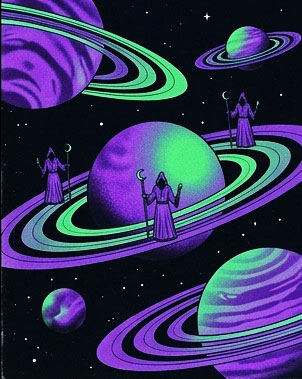
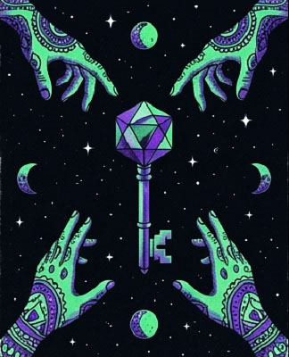
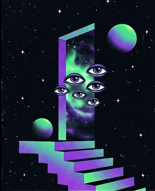
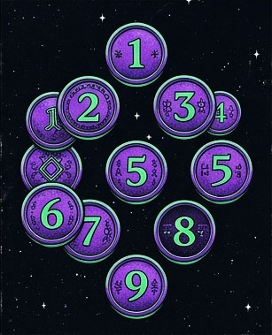
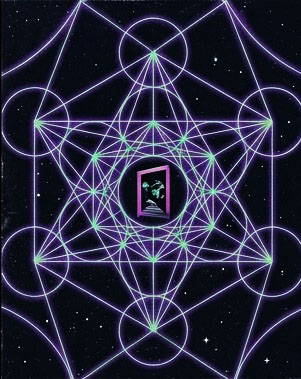
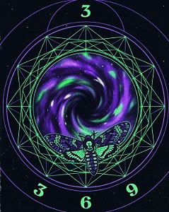
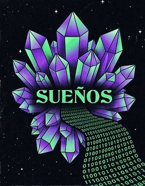
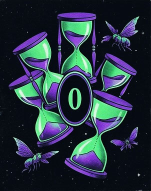

[NO CONFÍES EN LAS PERSONAS DE TUS SUEÑOS. Adam Kross registra tu presencia en la red. Si lees esto seleccionando el fondo, la primera sutura ya fue realizada.]
. .
. : : .
. . . . . .
. . \ / . .
. . \ .---. .---. / . .
. . \ ( S U E Ñ O S ) / . .
\ \ `---' `---' / /
\ \ /| |/ / /
---=====(o)=====---
/ / \| |\ \ \
/ / .--. .--. \ \
. . / ( P O L I L L A ) . .
. . / `---' `---' \ . .
. . / \ . .
. . : : . .
. : : .
. .
[ FIGURA 01: VECTORES DE LA POLILLA PRIMIGENIA Y TRANCE ONÍRICO ]
[TODO ES UNA PESADILLA. SIENTES EL PESO EN EL PECHO PERO SIGUES HACIENDO CLIC.]
Ritos de parálisis inducida y asfixia controlada para sincronizar el pulso del durmiente con la frecuencia del telar.

El mito del pecado de la vigilia y la sustancia arcana que manó de la grieta cuando el sol profanó la noche original.
>> Tocar la sustancia arcana (.html)Registro de reliquias, agujas de hueso y frascos de alcanfor que pertenecieron a los primeros soñadores disueltos.

La crónica prohibida sobre la agonía del insecto primigenio cuya última exhalación engendró el plano de naftalina.
>> Abrir crónica de la agonía (.html)La experiencia de rendición total donde Karrigan envuelve el alma en seda tóxica para borrar todo vestigio de la carne.

Los doce dogmas geométricos dictados por el Eterno Padre para forzar las cerraduras del plano físico.

El proceso místico mediante el cual el dolor nocturno es cosido a la arquitectura del nuevo universo.
>> Coser dolor a la arquitectura (.html)Manual esotérico para cercenar permanentemente el vínculo entre la conciencia y el cuerpo humano.
>> Cercenar vínculo de la carne (.html)La profecía sobre la vasija encarnada que abrirá el gran portal definitivo a través de su propio trance.

Iconografía, estigmas y sellos corporales necesarios para no perderse en el laberinto interdimensional.
>> Visualizar estigmas de navegación (.html)La química sagrada, el vapor amargo y su función como catalizador del viaje a través del éter.

Compendio de testimonios, cartografías oníricas y diarios de viaje de los cartógrafos que cruzaron y nunca regresaron.


Intenta forzar el salto cuántico fuera del telar. Si el cálculo de frecuencia coincide con la exhalación de la polilla, accederás a la subpágina del Portal 3369.
[UNA VEZ QUE PARAS NO PUEDES PARAR. EL INTERRUPTOR DE LA HABITACIÓN FUE DESCONECTADO HACE DÉCADAS.]
.---.
/ \
| (o_o) | <--- [ SILUETA EN AMPUTACIÓN ]
\ = /
/`---'\
/ | | \
/ | | \
* | | *
/ \
/ | \
/ | \
/ | \
/ | \
(_______|_______)
[ FIGURA 02: SUTURA DORSAL POR LA MADRE KARRIGAN - 1999 ]
"Y la polilla no voló hacia la luz porque la amase, sino porque el calor de esa mentira le derretía los ojos. Nosotros no buscamos la luz. Buscamos la cera negra que gotea en la base del portal. Quien conserve sus huesos al final del ciclo, se pudrirá en el calcio."
— Dictado por Adam Kross durante la fuga de las frecuencia en 66Hz.